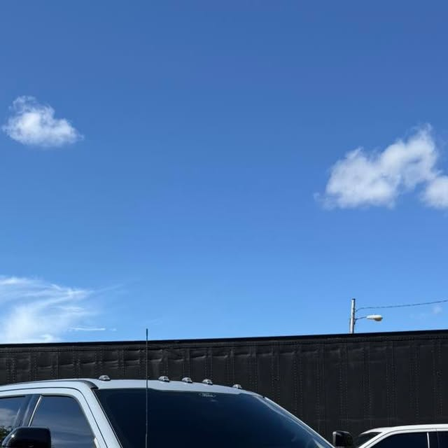
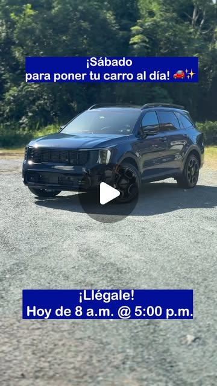
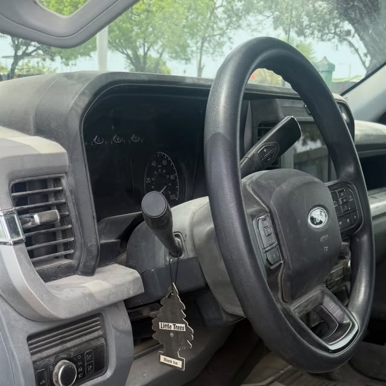
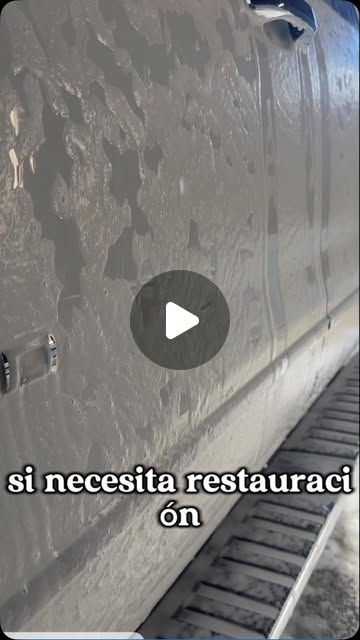

Lavado exterior detallado
Lavado completo al detalle para devolverle presencia y brillo a tu vehículo.

San Germán - Puerto Rico
Tu detailer favorito de San Germán, desde 2020. Trabajando por ti y para ti: el detalle no es un extra, es el estándar.
Lo que hacemos
Del lavado detallado al recubrimiento: cada servicio con el estándar Muñiz, desde 2020.

Lavado completo al detalle para devolverle presencia y brillo a tu vehículo.
Motor limpio y acondicionado, con el cuidado que un trabajo así exige.

Interior al detalle: cada superficie, cada rincón, como se merece.

Especialistas en corrección de pintura y pulido profesional: que tu carro vuelva a brillar como se merece.
Recubrimiento Graphene Coating en pintura, bumpers y focos: protección de otro nivel.

Recubrimiento cerámico a aros y calipers, cerámica a todo el interior y cerámico en cristales.
Descontaminación completa antes de corregir y proteger: la base de un buen trabajo.
Terminando con ese gloss que se nota: protección cerámica para mantener el resultado.
Cómo trabajamos
Trabajos y reels reales de Muñiz
Fotos y reels reales de su Instagram. Sin stock, sin inventos.
Dudas comunes
En San Germán, Puerto Rico. Gustavo Muñiz atiende con cita: escríbenos por WhatsApp al 787-232-2839.
Según el vehículo: lavado exterior detallado, lavado de motor, limpieza interior detallada, descontaminación, corrección de pintura y recubrimiento.
Sí, son especialistas en corrección de pintura y pulido profesional, con recubrimientos Graphene y cerámicos.
Cada vehículo y cada servicio es distinto. Escríbenos por WhatsApp y te damos cotización gratis, sin compromiso.
Llámanos y deja que tu vehículo vuelva a brillar como se merece.